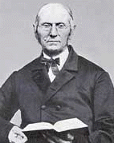

Joseph Bates' letter to brother and sister Hastings in 1848
By Joseph Bates (1792-1872)
Fairhaven, Monday, 7th August, 1848
Dear Brother & Sister Hastings,
I thought I would say a few words respecting my contemplated journey to the West. Since my return home from your place, I have been prevented from going very far from home having nothing to defray my traveling expenses. Perhaps its all for the best, but things have looked darker to me than ever before. I have been urged to go to Indiana, but I had nothing to start with. Brethren in Western NY appointed a conference some time ago to commence the 18th. (Inst.?)& sent for me again to come. I stated to them that I should be glad to come if I could get there. I have been praying the Lord to show me duty & while I have been watching for the cloud to part asunder. Br White & Ellen writes me that she has had visions in one of which God showed her that she must go West before she returned to Me and says she saw that I was needed there. And if I was prevented from going for the want of means those who had & withheld, the consequence of the lack would be required of them. Two sisters in CT sent me six dollars & Br Edson of Western NY sent me two to help me on (traveling expenses 2 years ago was about 22 dollars). So that while the way has been opening for one to go. Br Chamberlain of CT, Br White & Wife & (Br?) Gurney all impressed that its their duty to go to this meeting, Now Br Chamberlain & Br White writes me to meet them in Brooklyn at Sister Moody’s on Friday & have our first meeting there. Leave what I need for my family only reserve enough to bring me to NY City and if I cannot do any better they will share with me. Yes says Br C if we have to come on an allowance of bread & water for a little while. So you see the way is open & we are preparing to leave here on Thursday 10th — at 5 1/2 PM after the meeting at Brooklyn. Take steam boat on Monday 14th, for Albany from thence take the cheap rout by the canal to Oswego hence SE 10 miles to Volneg the place of the meeting to begin the 18th. Its probable that some of us may proceed from thence to Indiana if it be the will of the Lord. Br C prepared for us to return on or at our return from NY to hold another conference in CT on the 8th Sept. So you see we shall be absent 4 or 5 weeks. This move West I understand to be the work of God. The Sealing with the seal of the living God. The work is progressive. See my view of it in my last work PP 94-99. See Rev vii: 1-3 What is the Seal of the living God? The Sabbath. God says it is a covenant, it is sign between me and the children of Israel forever Exo ?: 13, 17. Eze XX:12,20. The commandments the same, see Dut VI: 1,2 then 5-9 & X: 12, 13. XI"18. Thus the saints will be sealed under this covenant & sign. The Holy Sabbath, they cannot be sealed until united on this point. I conceive that our work for the saving, securing or sealing the little flock is now closing up forever because we cannot offer the united prayer to God in this time of trouble thats now winging its way like a mighty whirlwind unless we are agreed in at least one point of our faith. The answer to this united prayer for deliverance will be answered by God roaring out of Zion & uttering his Voice from Jerusalem see Joel III: 16, 17. Jer 25:30-33. Let us see to it that we discharge our whole duty in saving the little remnant. For when God speaks the sealing time will be ended forever. The last news from Europe are ominous of the end of all things. It won't do to stop now onward with our work that our consciences may be void of offense towards our brethren & God. I hope to be home by the 12th of Sept if I am not directed to Ind & and then the meeting will probably open in Me at Topsham. If you have any arguments to make for meetings in NH please write and let me hear from you by that time.
I hear by letter from me that there is a brother living at Dead River up the encheck that was looking for the Lord the 18th June instead of which he had some wonderful manifestations. Says he was forbidden ever to eat any more perishable food, that had then by his own account (by letter) lived 26 days without & and was growing stronger. Yet his blood was fast waning away. Says he has been put in connection with the dead, had been to the bottom of the sea to find them had seen Paul and an innumerable company, that they were now about being raised, but Oh how different from what we have been expecting. My love to you & and the children. Also G & H if with you also Sr. Whitcom if you write. All join in love and greeting. Pray for us that God may be glorified in our contemplated meetings. In much haste for the mail.
Things to notice
- You will see the fanaticisms of the early Adventists even after the 1844 fiasco—talking with the dead, not eating, and seeing the dead including Paul who is about to be raised from the dead. Captain Joseph Bates believed this man. These are the "firm foundations" of the pioneers upon which Adventism is built.
Robert K. Sanders, Founder and Editor of Truth or Fables, 1997–2012
Life Assurance Ministries assumed ownership of Truth or Fables in 2012
© 2016 Life Assurance Ministries. All rights reserved.